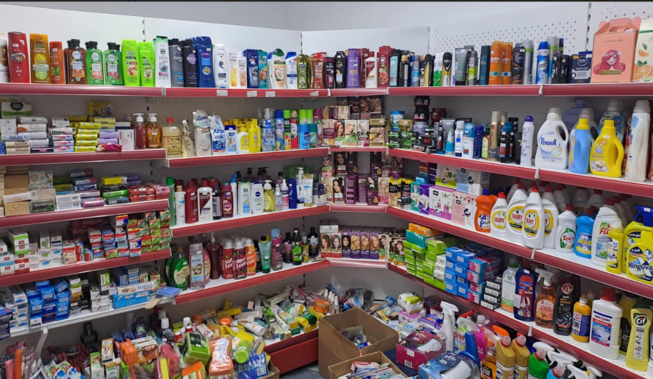

Ask about delivery
Contact Lido by phone to ask whether a delivery order is possible. The shop is at Uly Dala Avenue, 31, in Astana. Delivery availability and charges need confirmation from staff.
Find the phone number or read what to ask.
Call the shop
The number is listed on Yandex Maps. On a phone, the link can open the calling app. On a computer, you may need a compatible app or can dial the displayed number yourself.
This page does not send an order or take payment. Only the shop can confirm whether it can accept your request.
What to ask
- Ask whether delivery is available to your address.
- Name the products, package sizes and quantities you need.
- Confirm the total price, delivery charge and payment method.
- Agree on the address and expected delivery time.
For example, specify whether you need a loaf of bread, Barni, sausage, cheese, chips, soap or shampoo. Ask about stock before agreeing on substitutions. If delivery is unavailable, ask whether you can collect the items in person.
Inside the shop

